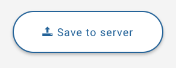
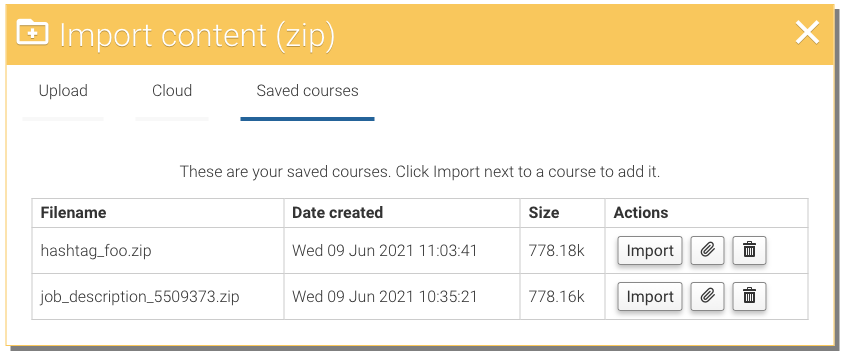
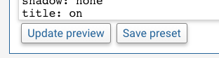
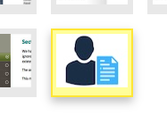

You find this on the Download page. Publishing is just as easy and quick as previewing or downloading your zip (it's doing the same thing, only we store it for you).
Under the 'Import Zip' page there is a list of the courses that you have saved. You can import the course, download it, or delete it.

You can already edit a theme, but the changes weren't persisted. Now you can save a copy of a theme which is stored against your licence. Now you can make a theme that is right for your situation so all future courses can use it. To make a copy of a theme, just show the editor below a theme, then press 'Save preset'.

Load your preset by clicking on the icon as you would any other theme.
